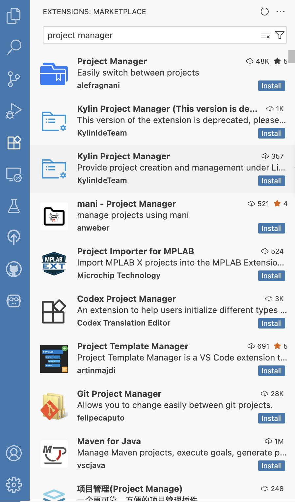

Positron for Product Owners
![]()

The clever cookies at Posit (creators of RStudio) recently released Positron, their new ‘next generation’ integrated development environment (IDE), after 2+ years of development. This software is multilingual, and will look familiar to those who have used VSCode in the past. It has been created to build upon the successes of RStudio for statistical computing and graphics, to create a seamless workflow for the development of data science projects. It’s a lovely piece of software that I’ve recently started working with and is providing me with some useful features to help in my role as a product owner. I wanted to give a little round-up of what I’ve found useful with it so far, for someone whose daily tasks differ from standard data science or analysis (but includes elements of both).
Firstly, what do I mean by a ‘product owner’? I’ll keep this brief since there is already so much out there that eloquently describes this role and its relationship with others in the Agile universe. Essentially, my job is to ensure our data science team is building the right thing, at the right time, for our customers.
The data science team’s time is spent marshalling their wizardry (as it seems to me) to write code, create packages, and curate workflows to meet the requirements for the tasks at hand. My job is to make sure those tasks are the right ones for meeting customer needs. This involves a lot of thinking about stakeholder requirements, translating them to a prioritised list of tools or functionality elements that will truly answer their questions, gathering and assessing user feedback, improving the user experience, and trying to find the sweet spot where the time, money and effort spent on development is appropriate for the value of the new thing for the customer.
I’m a data scientist myself, with a background in R and Python. I love writing code and building R packages and have done so in RStudio for some time now. A product owner’s working week is more focused on planning, prioritising, prioritising again, thinking about processes, documenting decisions and so forth.
But to contribute to our team’s work I also write little bits of code, write documentation, create diagrams and infographics, undertake some QA, review PRs and so forth. Positron has made many of these elements easy and smooth. Here’s a round-up of the ways Positron is helping me with the day job:
Curating the product backlog
This is probably my favourite thing about Positron. The GitHub interface in RStudio was ok, but I still found myself using the command line, which felt like it interrupted my flow of work to a degree. Positron provides for the ability to never have to leave the IDE. Once you have authenticated your GitHub account in Positron, you can click the GitHub icon in the activity panel to see all the pull requests and issues for that repo. You can create PRs from that menu too – it’s all self-explanatory and works really well. Clicking on one of your repo issues will also open it as an additional tab in the editor pane, and you can interact with it there just as you would at github.com! No need to have browsers and shells open, it’s all just there. This helps my workflow massively, allowing me to keep my train of thought going.

Writing plans and processes and sharing them
Quarto, which is already bilingual, is the tool I use to write meeting notes, lists and plans, all within a locally version-controlled Quarto book. The whole book is searchable, so it’s easy to find the notes I’m looking for, and Positron makes working with Quarto very easy. Positron comes with a bootstrapped Quarto extension and the CLI is bundled with Positron, so no extra setup is needed. I can create my planning documents, with nice mermaid flow diagrams and such, and I can publish them easily from Positron to share with my team. I’ve written a package that I can use within the IDE to automatically append notes to any of the .qmd pages of my notes book. I can even create diagrams and charts in the IDE, and save them into my notes. If the diagram is complex, I can append the code chunks and output to my book too, since that’s what Quarto is great at.

I love Positron’s feature that allows scrolling back through the iterations of a plot too, which makes rolling the code back to a preferred solution nice and simple.

Testing new functionality and UX
I need to understand how our products are experienced by our users, so it helps me to run our apps in development locally. Using Positron allows me to use a very similar workflow to my familiar RStudio one, including using {devtools} for documenting and running package checks and using devtools::load_all() to test out new functionality locally. In addition to this, Positron makes working with tests really simple (which is saying something coming from me!). The ‘testing’ icon in the activity pane opens a dedicated interface sidebar, which neatly displays your tests and their results (provided you are in a package folder). It lets you easily rerun failing tests, see their error messages, and rerun batches of tests or all tests at once. This is a really great addition to the IDE.

Juggling many projects
I flit between projects often. Double-clicking the R Project file allows you to start a new RStudio session with the project already loaded. But there is no direct equivalent of the .Rproj file for Positron.
This is a little jarring at first, but opening a folder to begin working in a project is a familiar workflow with VSCode.
I wanted a quick and easy way to switch between projects, and have found the Project Manager Extension useful for this. It creates a new multi-folder icon in the activity pane, which when clicked gives a neat overview of saved projects (folders), which I can tag easily to bundle together related projects. Lovely!

Helpers for doing good data science
I don’t want to lose my skills as a data scientist; I like to dabble and make useful tools for myself, and very occasionally I get my hands dirty writing code with the team. Positron is helping me write better code, quickly, which helps me look like a data scientist (I hope!). My favourite features so far are having my code formatted automatically when I save an R or Quarto file by the excellent Air formatter (shipped as standard with Positron), using code snippets to get the syntax of common functions right first time, and the cool multi-cursor for editing in multiple places at once!


Overall, Positron feels like a nice place to be. I’m finding it to be an IDE that helps with so many aspects of being a product owner, and that can only help us to keep building the right thing at the right time.